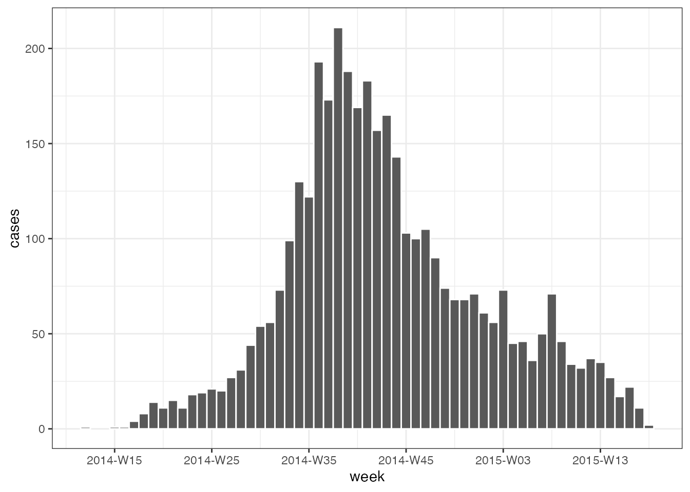
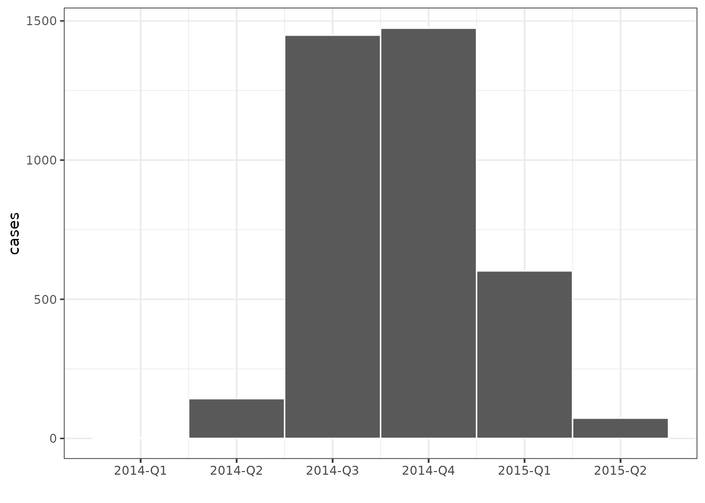

Overview
grates tries to make it easy to perform common date grouping operation by providing a simple and coherent implementations of a variety ofgrouped date classes:
-
grates_yearweek with arbitrary first day of the week (see
as_yearweek()); -
grates_month (see
as_month()); -
grates_quarter (see
as_quarter()); -
grates_year (see
as_year()); -
grates_period and grates_int_period for periods of
constant length (see
as_period()andas_int_period()).
These classes aim to be formalise the idea of a grouped date whilst also being intuitive in their use. They build upon ideas of Davis Vaughan and the datea package.
As well as the class implementations we also provide x-axis scales for use with ggplot2.
NOTE: When plotting graphs you may want more
flexibility then the built in scales provide. If you find yourself in
this situation there is always the option to convert the grouped object
to a date using the provided as.Date method. This will
return the date at the lower bound of the grouping. Equally you can
convert to a factor with as.factor.
grates_yearweek
as_yearweek() allows you to create
grates_yearweek objects. As arguments it takes, x,
the date vector you wish to group and firstday, the day of
the week you wish your weeks to start on; (this defaults to 1 (Monday)
and can go up to 7 (Sunday)). The first week of the year is then defined
as the first week containing 4 days in the new calendar year. This means
that the calendar year can sometimes be different to that of the
associated yearweek object.
# create weekday names
wdays <- weekdays(as.Date(as_yearweek(as.Date("2020-01-01"), firstday = 1L)) + 0:6)
wdays <- setNames(1:7, wdays)
# example of how weeks vary by firstday over December and January
dates <- as.Date("2020-12-29") + 0:5
dat <- lapply(wdays, function(x) as_yearweek(dates, x))
bind_cols(dates = dates, dat)
#> # A tibble: 6 × 8
#> dates Monday Tuesday Wednesday Thursday Friday Saturday Sunday
#> <date> <yrwk> <yrwk> <yrwk> <yrwk> <yrwk> <yrwk> <yrwk>
#> 1 2020-12-29 2020-W53 2021-W01 2020-W52 2020-W52 2020-W52 2020-W52 2020-W53
#> 2 2020-12-30 2020-W53 2021-W01 2021-W01 2020-W52 2020-W52 2020-W52 2020-W53
#> 3 2020-12-31 2020-W53 2021-W01 2021-W01 2021-W01 2020-W52 2020-W52 2020-W53
#> 4 2021-01-01 2020-W53 2021-W01 2021-W01 2021-W01 2021-W01 2020-W52 2020-W53
#> 5 2021-01-02 2020-W53 2021-W01 2021-W01 2021-W01 2021-W01 2021-W01 2020-W53
#> 6 2021-01-03 2020-W53 2021-W01 2021-W01 2021-W01 2021-W01 2021-W01 2021-W01We make working with yearweek and other grouped date
objects easier by adopting logical conventions:
dates <- as.Date("2021-01-01") + 0:30
weeks <- as_yearweek(dates, firstday = 5) # firstday = 5 to match first day of year
head(weeks, 8)
#> <grates_yearweek[8]>
#> [1] 2021-W01 2021-W01 2021-W01 2021-W01 2021-W01 2021-W01 2021-W01 2021-W02
str(weeks)
#> yrwk [1:31] 2021-W01, 2021-W01, 2021-W01, 2021-W01, 2021-W01, 2021-W01, 20...
#> @ firstday: int 5
dat <- tibble(dates, weeks)
# addition of wholenumbers will add the corresponding number of weeks to the object
dat %>%
mutate(plus4 = weeks + 4)
#> # A tibble: 31 × 3
#> dates weeks plus4
#> <date> <yrwk> <yrwk>
#> 1 2021-01-01 2021-W01 2021-W05
#> 2 2021-01-02 2021-W01 2021-W05
#> 3 2021-01-03 2021-W01 2021-W05
#> 4 2021-01-04 2021-W01 2021-W05
#> 5 2021-01-05 2021-W01 2021-W05
#> 6 2021-01-06 2021-W01 2021-W05
#> 7 2021-01-07 2021-W01 2021-W05
#> 8 2021-01-08 2021-W02 2021-W06
#> 9 2021-01-09 2021-W02 2021-W06
#> 10 2021-01-10 2021-W02 2021-W06
#> # … with 21 more rows
# addition of two yearweek objects will error as it is unclear what the intention is
dat %>%
mutate(plus4 = weeks + weeks)
#> Error in `mutate()`:
#> ! Problem while computing `plus4 = weeks + weeks`.
#> Caused by error in `vec_arith()`:
#> ! <grates_yearweek> + <grates_yearweek> is not permitted
# Subtraction of wholenumbers works similarly to addition
dat %>%
mutate(minus4 = weeks - 4)
#> # A tibble: 31 × 3
#> dates weeks minus4
#> <date> <yrwk> <yrwk>
#> 1 2021-01-01 2021-W01 2020-W49
#> 2 2021-01-02 2021-W01 2020-W49
#> 3 2021-01-03 2021-W01 2020-W49
#> 4 2021-01-04 2021-W01 2020-W49
#> 5 2021-01-05 2021-W01 2020-W49
#> 6 2021-01-06 2021-W01 2020-W49
#> 7 2021-01-07 2021-W01 2020-W49
#> 8 2021-01-08 2021-W02 2020-W50
#> 9 2021-01-09 2021-W02 2020-W50
#> 10 2021-01-10 2021-W02 2020-W50
#> # … with 21 more rows
# Subtraction of two yearweek objects gives the difference in weeks between them
dat %>%
mutate(plus4 = weeks + 4, difference = plus4 - weeks)
#> # A tibble: 31 × 4
#> dates weeks plus4 difference
#> <date> <yrwk> <yrwk> <int>
#> 1 2021-01-01 2021-W01 2021-W05 4
#> 2 2021-01-02 2021-W01 2021-W05 4
#> 3 2021-01-03 2021-W01 2021-W05 4
#> 4 2021-01-04 2021-W01 2021-W05 4
#> 5 2021-01-05 2021-W01 2021-W05 4
#> 6 2021-01-06 2021-W01 2021-W05 4
#> 7 2021-01-07 2021-W01 2021-W05 4
#> 8 2021-01-08 2021-W02 2021-W06 4
#> 9 2021-01-09 2021-W02 2021-W06 4
#> 10 2021-01-10 2021-W02 2021-W06 4
#> # … with 21 more rows
# weeks can be combined if they have the same firstday but not otherwise
wk1 <- as_yearweek("2020-01-01")
wk2 <- as_yearweek("2021-01-01")
c(wk1, wk2)
#> <grates_yearweek[2]>
#> [1] 2020-W01 2020-W53
wk3 <- as_yearweek("2020-01-01", firstday = 2)
c(wk1, wk3)
#> Error in `vec_ptype2.grates_yearweek.grates_yearweek()`:
#> ! Can't combine <grates_yearweek>'s with different `firstday`
# load some simulated linelist data
dat <- ebola_sim_clean$linelist
# Example of week plot
week_plot <-
dat %>%
mutate(week = as_yearweek(date_of_infection), firstday = 7) %>%
count(week, name = "cases") %>%
na.omit() %>%
ggplot(aes(week, cases)) + geom_col(width = 1, colour = "white") + theme_bw()
week_plot
We can have date labels on the x_axis by utilising
scale_x_grate_yearweek:
week_plot + scale_x_grates_yearweek(format = "%Y-%m-%d", firstday = 7)
grates_month
as_month allows users to group by a fixed number of
months. As arguments it takes:
-
x, the date vector you wish to group; -
n, the number of months you wish to group by (defaulting to 1) and; -
origin, an optional value indicating where you would like to start your periods from relative to the Unix Epoch (1970-01-01).
By default the provided scale creates a histogram-like plot (unlike a histogram the widths of the intervals in the plot are identical across months) but this can be changed to have centralised labelling.
month_dat <-
dat %>%
mutate(date = as_month(date_of_infection, n = 2)) %>%
count(date, name = "cases") %>%
na.omit()
month_plot <-
ggplot(month_dat, aes(date, cases)) +
geom_col(width = 2, colour = "white") +
theme_bw() +
theme(axis.text.x = element_text(angle = 45, hjust=1)) +
xlab("")
month_plot
month_plot + scale_x_grates_month(format = NULL, n = 2, origin = 0)
grate_quarter and grate_year
as_quarter() and as_year() behave similarly
to as_yearweek() with the main difference main being that
they have no need for a firstday argument:
# create weekday names
dates <- seq(from = as.Date("2020-01-01"), to = as.Date("2021-12-01"), by = "1 month")
as_quarter(dates)
#> <grates_quarter[24]>
#> [1] 2020-Q1 2020-Q1 2020-Q1 2020-Q2 2020-Q2 2020-Q2 2020-Q3 2020-Q3 2020-Q3
#> [10] 2020-Q4 2020-Q4 2020-Q4 2021-Q1 2021-Q1 2021-Q1 2021-Q2 2021-Q2 2021-Q2
#> [19] 2021-Q3 2021-Q3 2021-Q3 2021-Q4 2021-Q4 2021-Q4
as_year(dates)
#> <grates_year[24]>
#> [1] 2020 2020 2020 2020 2020 2020 2020 2020 2020 2020 2020 2020 2021 2021 2021
#> [16] 2021 2021 2021 2021 2021 2021 2021 2021 2021
as_quarter(dates[1]) + 0:1
#> <grates_quarter[2]>
#> [1] 2020-Q1 2020-Q2
as_year(dates[1]) + 0:1
#> <grates_year[2]>
#> [1] 2020 2021
dat %>%
mutate(date = as_quarter(date_of_infection)) %>%
count(date, name = "cases") %>%
na.omit() %>%
ggplot(aes(date, cases)) +
geom_col(width = 1, colour = "white") +
scale_x_grates_quarter(n.breaks = 10) +
theme_bw() +
xlab("")
dat %>%
mutate(date = as_year(date_of_infection)) %>%
count(date, name = "cases") %>%
na.omit() %>%
ggplot(aes(date, cases)) +
geom_col(width = 1, colour = "white") +
scale_x_grates_year(n.breaks = 2) +
theme_bw() +
xlab("")
period
as_period() is similar to as_month() and
allows users to group by periods of a fixed length. As arguments it
takes, x, the date or integer vector you wish to group,
n and origin.
dat %>%
mutate(date = as_period(date_of_infection, n = 14)) %>%
count(date, name = "cases") %>%
na.omit() %>%
ggplot(aes(date, cases)) +
geom_col(width = 14, colour = "white") +
theme_bw() +
xlab("")
dat %>%
mutate(date = as_period(date_of_infection, n = 28)) %>%
count(date, name = "cases") %>%
na.omit() %>%
ggplot(aes(date, cases)) +
geom_col(width = 28, colour = "white") +
theme_bw() +
xlab("")